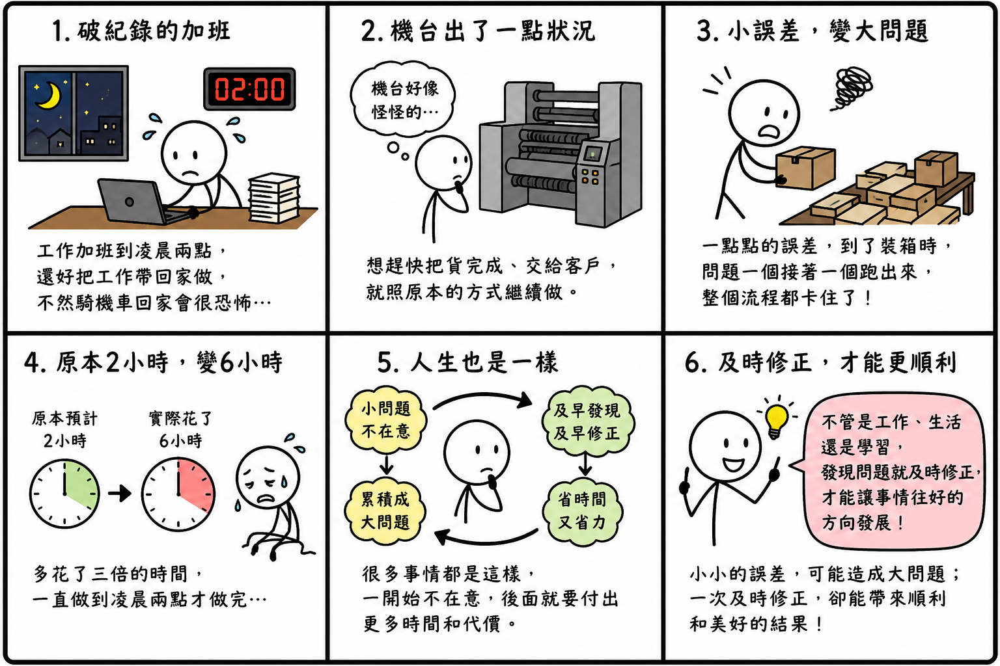

日期：2026/07/02

今天真的是破紀錄的一天。
因為工作的關係，我一路加班到凌晨兩點，還好是把工作帶回家做。如果是在公司做到那麼晚，還要再騎機車回家，我應該會覺得滿恐怖的。畢竟凌晨兩點路上幾乎沒什麼人，一個人騎在昏暗的道路上，光想到那個畫面就有點害怕，所以能在家把工作完成，真的安心許多。
今天之所以會加班到這麼晚，是因為印刷品後加工的機台出了一點狀況。
一開始只是覺得機台好像有點怪怪的，但也沒有嚴重到不能做，加上想趕快把貨完成、順利交給客戶，所以就照著原本的方式繼續做。
沒想到，就是這一點點的誤差，到了後面裝箱時，問題一個接著一個跑出來，整個流程都卡住了。
原本預計兩個小時就能完成的工作，最後竟然花了整整六個小時，等於多花了三倍的時間，直到凌晨兩點才全部做完。
做到最後，我一直在想，其實人生很多事情，不也是這樣嗎？
很多問題剛開始都不大，只是會讓人覺得「好像怪怪的」。如果當下願意停下來仔細檢查，花一點時間把問題找出來、修正好，也許後面就能省下更多時間和力氣。
可是很多時候，我們都會因為趕時間，或覺得應該沒關係，而選擇先繼續做。結果到了後面，小問題慢慢累積成大問題，不但花更多時間補救，也讓自己更累、更辛苦。
這也讓我想到，不只是工作，生活和學習其實也是一樣。
當發現自己的心態、習慣，甚至想法開始出現一點點偏差時，如果能及早發現、及早修正，很多事情都能往好的方向發展。反而最怕的是明知道有點不對勁，卻一直放著不管，等到問題越滾越大，再回頭處理，就需要付出更多時間和代價。
今天雖然加班到很晚，身體真的有點疲累，但這六個小時並沒有白費。它讓我上了一堂很實際的人生課，也提醒自己，以後遇到任何事情，都不要忽略那些看似微小的問題。